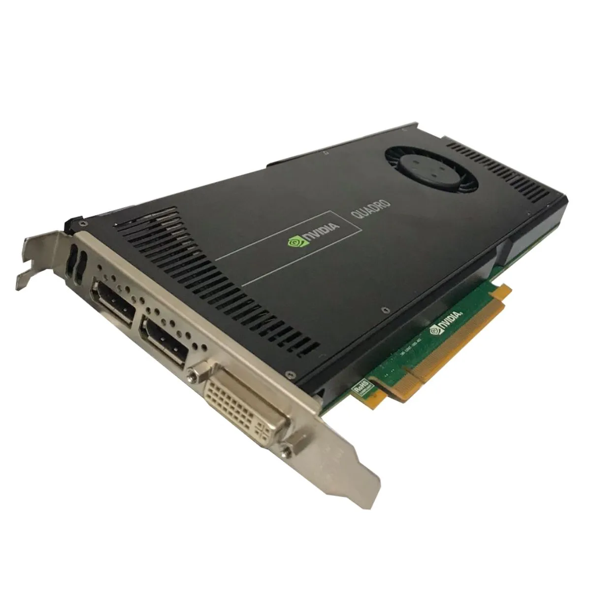

Uma GPU é limpa é essencial para garantir o melhor desempenho do PC e aumentar a durabilidade do componente. Entenda tipos de higienização e limpe sua placa de vídeo.
Por que você deve limpar uma placa de vídeo?
Quando uma placa de vídeo está limpa, ela é capaz de manter uma melhor dissipação de calor, o que resulta em temperaturas mais baixas e, consequentemente, em um melhor desempenho. A remoção regular da poeira e sujeira pode evitar problemas como superaquecimento e falhas no hardware, e, por isso, realizar a limpeza de forma adequada é fundamental para não causar danos ao dispositivo.
Como limpar a placa de vídeo?
Antes de iniciar a limpeza da placa de vídeo, é necessário se preparar adequadamente para garantir um processo seguro e eficiente. Primeiro, certifique-se de ter todos os materiais necessários à mão. Isto inclui uma chave de fenda para desmontar a placa de vídeo (se for fazer uma limpeza profunda), ar comprimido para soprar a poeira, um pincel de cerdas macias para limpar áreas de difícil acesso, álcool isopropílico para limpeza de componentes, cotonetes ou um pano sem fiapos para aplicar o álcool, e pasta térmica caso seja necessário substituí-la.

Além dos materiais, é fundamental desligar o computador e desconectar o cabo de alimentação antes de limpar a placa de vídeo para evitar choques elétricos ou danos ao sistema. É também recomendado esperar alguns minutos após desligar o computador para permitir que os componentes internos esfriem. Só então abra o gabinete e localize a GPU. Remova os parafusos que a prendem ao gabinete e desconecte-a da placa-mãe.
Seja qual for o tipo de limpeza, ao conclui-la, ligue o computador e monitore o desempenho e as temperaturas da placa de vídeo para se certificar de que está tudo correto com a montagem e com o funcionamento da placa.